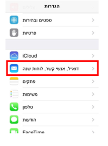
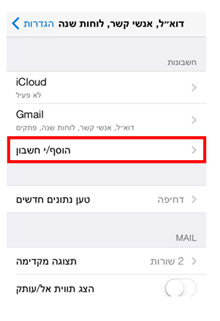
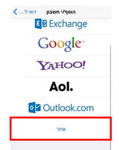
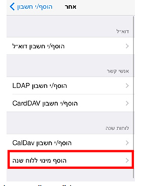
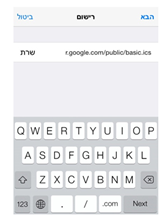
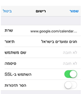

ראשי >> מדריכים >> איך להכניס חגים לאייפון
ידי הכנסת כל המועדים והחגים היהודיים ללוח השנה של האייפון. 1. היכנסו במכשיר אל "הגדרות".
2. בחרו באפשרות "דוא"ל אנשי קשר לוחות שנה".

3. לחצו על "הוסף חשבון".

4. בחרו ב-"אחר".

5. בחרו באפשרות "הוסף מינוי ללוח שנה".

6. כעת בשורה של "שרת" נדרש להעתיק את הכתובת הבאה:
https://www.google.com/calendar/ical/iw.israel%23holiday%40group.v.calendar.google.com/
public/basic.ics
)מומלץ להתחבר מהמכשיר בכדי להעתיק את הכתובת ולאחר מכן להדביק אותה למקום הרצוי. לאוהבי
האתגרים שבנינו, ניתן להעתיק את הכתובת גם ידנית (

7. לאחר שהזנתם את הפרטים לחצו על "הבא".
8. במידה והזנתם את הפרטים נכון ייפתח המסך הבא:

לסיום לחצו על "שמור".
כעת מופיעים אצלכם במכשיר כל החגים והמועדים בישראל.